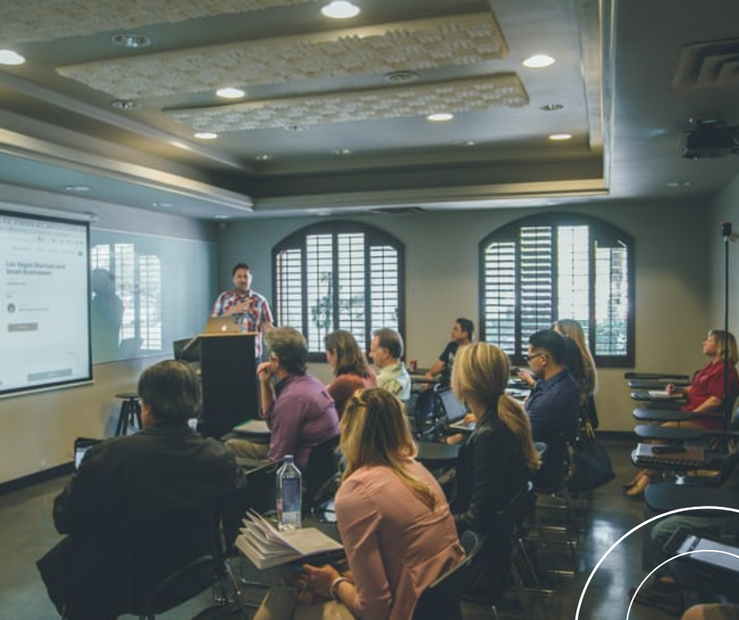

 Hace unos días un amigo me llamo para decirme que había leído una noticia sobre la demanda que hay de programadores y la importancia de invertir en su formación. Después de leer la noticia pensó en estudiar programación, pero no una carrera de 3 a 5 años. Literalmente me llamo para preguntarme si haciendo un bootcamp full-time, de tres meses, podría conseguir un empleo. 🙄🤔
Responder que sí, sin fundamentar o dar una explicación, es faltarles el respeto a personas que dedican varios años de formación en una carrera universitaria.
Esta claro que estudiamos para poder trabajar en un futuro, a corto o largo plazo. Lo primero que quiero aclarar es que en las dos metodologías el eje central esta puesto en formarte profesionalmente, aunque es verdad que el objetivo principal de la mayoría de las personas que eligen hacer un bootcamp, es porque necesitan insertarse en el mundo laboral lo mas rápido posible.
Cuando estudias programación te enfrentas a muchos desafíos. El primero, y creo que más difícil, es aprender a manejar la frustración 🤬 💣
Para eso no te prepara nadie, solo la misma práctica, pero ¿Qué pasa cuando no sabemos cómo atacar un problema? Lo más normal es que te desanimes y pienses que esto no es para vos.
El bootcamp te ofrece algo así, hacer sin entender y volver a hacer, hasta que finalmente lo entiendes ¿Cómo es eso? Se piensa en una planificación secuencial, donde cada unidad que vas viendo se relacionan para la construcción de un proyecto final. Todo está relacionado y lo que viste en la unidad 1, seguramente lo implementes en la unidad 4, aunque es probable que se implemente de otra manera, por lo tanto, ahí tienes una forma de entender cómo funcionaba lo que viste anteriormente.
Quizás te preguntes, entonces para que estudiar una carrera tan larga, si con una planificación acotada a 3 o 4 meses puedes aprender a programar 🙃
Bueno, como cada una de las palabras que estoy escribiendo, voy a decirte en base a lo que yo creo, al haber transitado ambos casos.
En una carrera, estudias los fundamentos de la ciencia de la computación, no te enseñan simplemente a programar. A priori, tampoco te enseñan concretamente a utilizar un lenguaje de programación o la funcionalidad de un framework, (con decirte que mi primer sitio web en la facultad fue en bloc de notas) ¿No aprendes Java, C#, Python, etc.? Sí, pero primero aprendes cómo se implementan los paradigmas de programación y eso es importante para que luego puedas utilizar cualquier lenguaje, estudiando la documentación correspondiente
En resumen, la pregunta del millón ¿Qué recomiendas más? Creo que depende de las necesidades de cada uno, la etapa que estés viviendo, la curiosidad que tengas por aprender. Lo que si es claro, que no te va a alcanzar con terminar ninguna de las dos, vas a tener que seguir estudiando, leyendo, investigando y desarrollando 😱
Hoy tenemos la suerte de poder acceder a muchísimas plataformas destinadas a enseñar y entrenar programación. Yo empezaría por ahí, para tener un diagnóstico sobre lo que implica la profesión. Si ves que es algo que te motiva, te entusiasma y fundamentalmente notas que estas aprendiendo a pensar de una manera diferente, es porque estás en el lugar correcto. Les dejo algunas de las plataformas que me parecen interesantes para aprender y/practicar. Quienes tengan otras para aportar, bienvenido sea.
https://developer.mozilla.org/
https://www.w3schools.com/
https://www.udemy.com/
https://www.freecodecamp.org/
https://codepen.io/
https://www.codewars.com/
https://stackblitz.com/